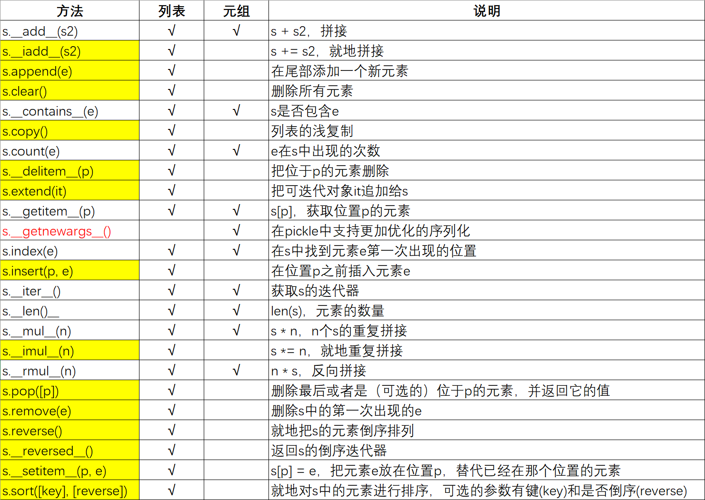

【Python】Python元组拆包捡到8倍镜快准狠¶

元组拆包¶
元组是不可变列表，列表是通过索引取值的，元组也是：
tuple_test = (1, 2, 3)
a = tuple_test[0]
b = tuple_test[1]
c = tuple_test[2]
但Python是出了名的一行代码解决问题，元组拆包就是精髓技术之一：
a, b, c = tuple_test
print("%s %s %s" % tuple_test)
把元组一一对应拆出来，就叫做元组拆包。拆包有个要求，元组中的元素数量必须跟接受这些元素的空挡数一致，否则会报错：
tuple_test = (1, 2, 3)
a, b = tuple_test # ValueError: too many values to unpack (expected 2)
``_``占位符
使用_占位符可以解决这个问题：
tuple_test = (1, 2, 3)
a, b, _ = tuple_test
这样就只获取到部分数据了，这在取函数返回值时特别有用，比如：
import os
_, filename = os.path.split("/home/dongfanger/.ssh/idrsa.pub")
print(filename) # "idrsa.pub"
``*``前缀
当返回值特别多时，_占位符写起来麻烦，可以用*来处理剩下的元素：
>>> a, b, *rest = range(5)
>>> a, b, *rest
(0, 1, [2, 3, 4])
注意rest是个列表，如果没有足够元素，会返回空列表：
>>> a, b, *rest = range(2)
>>> a, b, *rest
(0, 1, [])
*前缀变量能放在任意位置，比如，放在中间：
>>> a, *body, c, d = range(5)
>>> a, body, c, d
(0, [1, 2], 3, 4)
放在前面：
>>> *head, b, c, d = range(5)
>>> head, b, c, d
([0, 1], 2, 3, 4)
实在是妙啊。
*还有一个作用，把元组拆开作为函数参数：
>>> divmod(20, 8)
(2, 4)
>>> t = (20, 8)
>>> divmod(*t)
(2, 4)
经典写法
*args就是这个道理。
嵌套元组拆包¶
嵌套元组是指元组中有元组，比如(1, 2, 3, (4, 5))，对于嵌套元组，你可能会想要拆两遍：
tuple_nest_test = (1, 2, 3, (4, 5))
a, b, c, d = tuple_nest_test
x, y = d
print(a, b, c, x, y)
实际上能一步到位：
tuple_nest_test = (1, 2, 3, (4, 5))
a, b, c, (x, y) = tuple_nest_test
print(a, b, c, x, y)
交换两个变量的值¶
元组拆包提供了语法糖，对于交换两个变量的值的常规写法：
temp = a
a = b
b = temp
可以切换为优雅写法：
b, a = a, b
具名元组¶
元组很像数据库表记录，除了没有表名和字段名，collections.namedtuple具名元组补偿了这个缺憾，它是一个工厂函数，可以用来构建一个带字段名的元组和一个有名字的类，比如：
import collections
# 定义
Card = collections.namedtuple("Card", ["rank", "suit"])
# 初始化
card_test = Card("J", "hearts")
# 使用
print(card_test.rank) # J
print(card_test[1]) # hearts
Card是表名，有两个表字段rank和suit。
定义具名元组需要2个参数，第1个参数是类名，第2个参数是字段名，既可以是可迭代对象（如列表和元组），也可以是空格间隔的字符串：
Card = collections.namedtuple("Card", ("rank", "suit"))
Card = collections.namedtuple("Card", "rank suit")
初始化时以一串参数形式传入构造函数：
card_test = Card("J", "hearts")
既可以通过.运算符，也可以用索引来取值：
print(card_test.rank)
print(card_test[1])
这个带名字的元组，对调试程序有很大帮助。
列表与元组¶
元组是不可变列表，它们就像双胞胎，长相类似，内在性格却有不同：

黄色列表独有，红色元组特有，元组竟然还多了个s.__getnewargs__()方法！从表中可以清楚地看到，除了跟增减元素相关的方法之外，元组支持列表的其他所有方法。
列表也能拆¶
既然列表和元组是孪生兄弟，那必然也有共同技能：
list_test = [1, 2, 3]
a, b, c = list_test
>>> divmod(20, 8)
(2, 4)
>>> t = [20, 8] # 换成列表
>>> divmod(*t)
(2, 4)
列表拆包，也是ok的。
小结¶
本文介绍了Python神奇操作元组拆包，借助_占位符和*前缀可以进行更加灵活的取值，具名元组实际用的还比较少，不过看一些源码是有的。文章最后比较了列表和元组的差异，列表也能拆包。列表（list）、元组（tuple），以及字符串（str），都有一个共同操作：切片。
参考资料：
《流畅的Python》